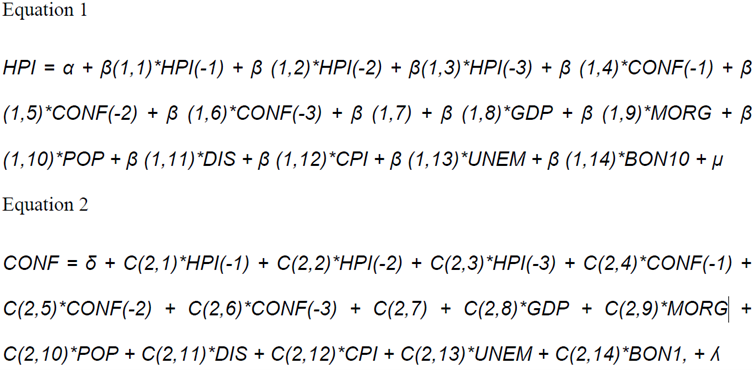

RR Project Report
I. Original research
The original research aimed to investigate the relationship between US housing prices and US consumer confidence level, quantified by the University of Michigan Consumer Sentiment Index. In an attempt to combine classical economic theory with behavioral theory, the research hypothesized that consumer confidence (quantified) had a positive influence on the changes in housing market. Towards conducting such an analyses, a Vector Autoregressive model was implemented, with two target variables - HPI, a broad measure of the movement of single-family house prices possibly deviating from its fundamental value (common definition of an “asset bubble”) and CONF, representing the confidence level of US consumers.
II. Reproduction of results (by translation of code from E-Views into R language)
1. Data pre-processing
On account of the original research presenting sufficient information regarding model variables and their sources, we were able to download/acquire the necessary data. However, variable MORG, which is later included in the original research analysis isn’t described in Table1.Variables -definitions and sources, however from the written description of the variables, we do know that MORG is supposed to represent number of outstanding mortgages nationally; therefore we include such a variable, but the data used by us vs the original research might differ.Additionally the original research does not mention anything on data pre-processing methods. Hence, relying on subjective intuition we exclude missing (NA) values at the source level (i.e raw data) and proceed towards adjusting the frequency of the data (quarterly frequency) and concatenating data sets.
| Variable | Brief Description | Source |
|---|---|---|
| HPI | Housing Pricing Index (1980=100) | Federal Reserve Economic Data |
| GDP | Gross Domestic Product (current US$, billions) | Federal Reserve Economic Data |
| CONF | Michigan Confidence Index (1964=100) | Surveys of consumers,University of Michigan |
| DSPI | Real Disposable Personal Income (chained 2009) | Federal Reserve Economic Data |
| CPI | Consumer Price Index (1984=100) | Federal Reserve Economic Data |
| UNRATE | Unemployment (% out of total labor force) | Federal Reserve Economic Data |
| POP | Total population (All ages, thousands) | Federal Reserve Economic Data |
| IR | Interest rate of 10 Yr US Treasury Bond | Federal Reserve Economic Data |
2. Modelling
(a) Stationarity,
The original research uses unit root tests in analyzing stationary of modeled variables. After first differences are taken, the Inverse Roots of AR Characteristic Polynomial, showed that there was no non-stationarity in the model as all values lied within the unit root circle. Our reproduction shows the same results.


(b) Correlation,
The original research presents Table 6. Correlation between 11 variables in the model, which shows correlation of 0.65 between HPI and MORG (the only p>=0.5), but does not describe which type of correlation was calculated in deriving such a conclusion. Additionally, variable FED appears in Table 6, which is mentioned neither earlier or later in the original research (hence, we also exclude it from our reproduction). Because of this, we aren’t able to fully reproduce the correlation matrix. We calculate Pearson, Kendall and Spearman correlation. In our reproduction, neither of the correlations show as strong a result between HPI and MORG (or between any two variables) as decribed in the original research, although Pearson and Spearman correlation do deliver the only p>=0.5 for HPI and MORG (p=0.58 and p=0.55, respectively).
CPI DSPI GDP HPI IR
CPI 1.00000000 -0.1646561629 0.312968807 -0.02243462 0.3052317681
DSPI -0.16465616 1.0000000000 0.104829981 0.11139135 0.0009794419
GDP 0.31296881 0.1048299807 1.000000000 0.32201625 0.2077911731
HPI -0.02243462 0.1113913475 0.322016251 1.00000000 0.0326549508
IR 0.30523177 0.0009794419 0.207791173 0.03265495 1.0000000000
POP 0.02386030 0.0564503126 -0.001111748 0.01031902 -0.0868824837
UNRATE -0.06846344 -0.0896451155 -0.503295124 -0.21835145 -0.3128817126
CONF -0.13551060 0.1795292481 0.078688486 -0.04950566 0.2630783076
MORTG 0.12237504 0.0931074204 0.358060551 0.58295026 0.0469798453
POP UNRATE CONF MORTG
CPI 0.023860300 -0.06846344 -0.13551060 0.12237504
DSPI 0.056450313 -0.08964512 0.17952925 0.09310742
GDP -0.001111748 -0.50329512 0.07868849 0.35806055
HPI 0.010319016 -0.21835145 -0.04950566 0.58295026
IR -0.086882484 -0.31288171 0.26307831 0.04697985
POP 1.000000000 0.18366400 -0.17796894 0.25576706
UNRATE 0.183664002 1.00000000 -0.20439350 -0.03784313
CONF -0.177968937 -0.20439350 1.00000000 -0.10173481
MORTG 0.255767055 -0.03784313 -0.10173481 1.00000000 CPI DSPI GDP HPI IR
CPI 1.00000000 -0.217300386 0.07283511 -0.047371163 0.202571500
DSPI -0.21730039 1.000000000 0.22261217 0.123773795 0.008543185
GDP 0.07283511 0.222612171 1.00000000 0.189132468 0.127156972
HPI -0.04737116 0.123773795 0.18913247 1.000000000 0.001722713
IR 0.20257150 0.008543185 0.12715697 0.001722713 1.000000000
POP 0.01195027 0.008263041 0.04708961 -0.010950414 -0.071339961
UNRATE 0.07983326 -0.142261317 -0.26463417 -0.073354967 -0.183110629
CONF -0.13078875 0.189639012 0.03607156 -0.057681157 0.125401476
MORTG 0.04672834 0.132603911 0.29742002 0.416669564 0.024659911
POP UNRATE CONF MORTG
CPI 0.011950271 0.07983326 -0.13078875 0.04672834
DSPI 0.008263041 -0.14226132 0.18963901 0.13260391
GDP 0.047089611 -0.26463417 0.03607156 0.29742002
HPI -0.010950414 -0.07335497 -0.05768116 0.41666956
IR -0.071339961 -0.18311063 0.12540148 0.02465991
POP 1.000000000 0.15759960 -0.11525607 0.18477853
UNRATE 0.157599605 1.00000000 -0.10976370 -0.01155545
CONF -0.115256068 -0.10976370 1.00000000 -0.10738705
MORTG 0.184778533 -0.01155545 -0.10738705 1.00000000 CPI DSPI GDP HPI IR
CPI 1.00000000 -0.317582043 0.10484045 -0.068527848 0.296053613
DSPI -0.31758204 1.000000000 0.31818460 0.177957498 0.007855992
GDP 0.10484045 0.318184600 1.00000000 0.283204573 0.193464424
HPI -0.06852785 0.177957498 0.28320457 1.000000000 0.009382463
IR 0.29605361 0.007855992 0.19346442 0.009382463 1.000000000
POP 0.01259443 0.013084299 0.07924472 -0.018558808 -0.108542360
UNRATE 0.10923999 -0.194704792 -0.36651607 -0.107188217 -0.248237463
CONF -0.19009999 0.269381356 0.05387476 -0.083775713 0.187477386
MORTG 0.07043598 0.180854804 0.38272974 0.556261955 0.042104076
POP UNRATE CONF MORTG
CPI 0.01259443 0.10923999 -0.19009999 0.07043598
DSPI 0.01308430 -0.19470479 0.26938136 0.18085480
GDP 0.07924472 -0.36651607 0.05387476 0.38272974
HPI -0.01855881 -0.10718822 -0.08377571 0.55626196
IR -0.10854236 -0.24823746 0.18747739 0.04210408
POP 1.00000000 0.22658967 -0.17444912 0.28414314
UNRATE 0.22658967 1.00000000 -0.15494612 -0.02304881
CONF -0.17444912 -0.15494612 1.00000000 -0.15789565
MORTG 0.28414314 -0.02304881 -0.15789565 1.00000000(c) Choosing the best VAR model,
The original research describes equation 1 and 2 for HPI and CONF VAR models, respectively. Both equations include coefficients for an unknown exogenous variable - B(1,7) and C(2,7) and it seems that both models include 3 lags of HPI and CPI and 1 lag of each of the remaining variables:

In selecting the proper lag length for the VAR model, the original research uses multivariate information criteria. Different models were estimated and compared for a maximum number of 3 lags. In the original research, the majority of selection criterias (AIC, HQ, SC and FPE) chose lag nr. 3. In our case, there is a 50/50 split between lag length 1 and any maximum lag length (where max(lag)=<10), where HQ and SC favor lag length 1 and AIC and FPE favor the maximum lag length.
$selection
AIC(n) HQ(n) SC(n) FPE(n)
3 1 1 3
$criteria
1 2 3
AIC(n) 4.813236e+01 4.800760e+01 4.708465e+01
HQ(n) 4.881157e+01 4.929809e+01 4.898644e+01
SC(n) 4.980591e+01 5.118735e+01 5.177060e+01
FPE(n) 8.019917e+20 7.132360e+20 2.889845e+20As an extension of the lag selection method used in the original report we decide to also: (a) check for joint significance of parameters for additional lags, (b) analyse autocorrelation of model residuals in selected VAR models using Portmanteau test and Breusch-Godfrey test
According to our joint significance test - VAR model with lag length 2 would be the best fit, however VAR model with lag length 3 does have a higher adjusted-R2. In turn, diagnostic tests indicate autocorrelation of residuals in all variations under maximum lag length 3 (although for VAR model with lag length 3 residuals are slightly less autocorrelated than in the rest). It is also noticeable that the first lags of the macroeconomic variables are most significant - compared to their 2nd or 3rd lag lengths, which speaks towards the choice of Equation 1 and Equation 2 made by the author of the original research.
Call:
lm(formula = y ~ -1 + ., data = datamat)
Residuals:
Min 1Q Median 3Q Max
-8.4827 -0.9704 0.0484 0.8604 6.0387
Coefficients:
Estimate Std. Error t value Pr(>|t|)
CPI.l1 -5.889e-01 1.773e-01 -3.321 0.001110 **
DSPI.l1 -3.090e-03 1.536e-03 -2.012 0.045854 *
GDP.l1 4.976e-03 2.890e-03 1.722 0.087068 .
HPI.l1 5.598e-01 6.399e-02 8.748 2.87e-15 ***
IR.l1 -9.008e-01 2.635e-01 -3.419 0.000798 ***
POP.l1 -2.296e-03 1.345e-03 -1.707 0.089705 .
UNRATE.l1 -1.141e+00 5.904e-01 -1.933 0.055031 .
CONF.l1 1.790e-02 3.526e-02 0.508 0.612260
MORTG.l1 5.314e-06 1.981e-06 2.683 0.008061 **
const 2.212e+00 9.028e-01 2.451 0.015335 *
---
Signif. codes: 0 '***' 0.001 '**' 0.01 '*' 0.05 '.' 0.1 ' ' 1
Residual standard error: 2.08 on 160 degrees of freedom
Multiple R-squared: 0.6142, Adjusted R-squared: 0.5925
F-statistic: 28.31 on 9 and 160 DF, p-value: < 2.2e-16
Call:
lm(formula = y ~ -1 + ., data = datamat)
Residuals:
Min 1Q Median 3Q Max
-13.5254 -2.7411 -0.0185 2.7102 15.4904
Coefficients:
Estimate Std. Error t value Pr(>|t|)
CPI.l1 -6.991e-01 4.171e-01 -1.676 0.0957 .
DSPI.l1 4.805e-04 3.613e-03 0.133 0.8943
GDP.l1 4.016e-03 6.799e-03 0.591 0.5555
HPI.l1 2.367e-01 1.505e-01 1.573 0.1178
IR.l1 8.306e-02 6.199e-01 0.134 0.8936
POP.l1 -9.345e-04 3.164e-03 -0.295 0.7681
UNRATE.l1 4.668e-01 1.389e+00 0.336 0.7372
CONF.l1 -4.924e-02 8.294e-02 -0.594 0.5536
MORTG.l1 -9.075e-06 4.660e-06 -1.948 0.0532 .
const 1.397e+00 2.124e+00 0.658 0.5117
---
Signif. codes: 0 '***' 0.001 '**' 0.01 '*' 0.05 '.' 0.1 ' ' 1
Residual standard error: 4.893 on 160 degrees of freedom
Multiple R-squared: 0.0547, Adjusted R-squared: 0.001527
F-statistic: 1.029 on 9 and 160 DF, p-value: 0.4194
Portmanteau Test (asymptotic)
data: Residuals of VAR object VAR_HPI_CONF_p1
Chi-squared = 2092.1, df = 1215, p-value < 2.2e-16
Breusch-Godfrey LM test
data: Residuals of VAR object VAR_HPI_CONF_p1
Chi-squared = 667.37, df = 405, p-value = 3.775e-15
Call:
lm(formula = y ~ -1 + ., data = datamat)
Residuals:
Min 1Q Median 3Q Max
-8.2411 -0.9798 0.1141 0.8190 5.5746
Coefficients:
Estimate Std. Error t value Pr(>|t|)
CPI.l1 -5.251e-01 1.835e-01 -2.863 0.00480 **
DSPI.l1 -2.994e-03 1.758e-03 -1.703 0.09067 .
GDP.l1 3.418e-03 3.164e-03 1.080 0.28177
HPI.l1 6.761e-01 8.275e-02 8.171 1.17e-13 ***
IR.l1 -8.194e-01 2.648e-01 -3.094 0.00235 **
POP.l1 -4.950e-03 1.864e-03 -2.655 0.00880 **
UNRATE.l1 -8.026e-01 6.391e-01 -1.256 0.21115
CONF.l1 4.221e-02 3.623e-02 1.165 0.24580
MORTG.l1 8.700e-06 5.194e-06 1.675 0.09598 .
CPI.l2 4.804e-01 1.821e-01 2.639 0.00920 **
DSPI.l2 -3.599e-06 1.811e-03 -0.002 0.99842
GDP.l2 6.639e-05 3.109e-03 0.021 0.98299
HPI.l2 -4.136e-02 8.262e-02 -0.501 0.61736
IR.l2 5.371e-01 2.751e-01 1.952 0.05278 .
POP.l2 3.569e-03 1.898e-03 1.880 0.06208 .
UNRATE.l2 1.737e-01 6.377e-01 0.272 0.78575
CONF.l2 6.932e-02 3.613e-02 1.919 0.05692 .
MORTG.l2 -4.493e-06 4.899e-06 -0.917 0.36049
const 1.108e+00 9.852e-01 1.125 0.26242
---
Signif. codes: 0 '***' 0.001 '**' 0.01 '*' 0.05 '.' 0.1 ' ' 1
Residual standard error: 2.008 on 150 degrees of freedom
Multiple R-squared: 0.6623, Adjusted R-squared: 0.6217
F-statistic: 16.34 on 18 and 150 DF, p-value: < 2.2e-16
Call:
lm(formula = y ~ -1 + ., data = datamat)
Residuals:
Min 1Q Median 3Q Max
-12.6430 -2.9632 -0.2094 2.8805 13.8369
Coefficients:
Estimate Std. Error t value Pr(>|t|)
CPI.l1 -8.249e-01 4.330e-01 -1.905 0.05869 .
DSPI.l1 8.046e-04 4.150e-03 0.194 0.84653
GDP.l1 1.024e-02 7.469e-03 1.370 0.17262
HPI.l1 1.475e-01 1.953e-01 0.755 0.45145
IR.l1 -4.931e-01 6.250e-01 -0.789 0.43140
POP.l1 -6.789e-03 4.401e-03 -1.543 0.12502
UNRATE.l1 -1.625e+00 1.508e+00 -1.078 0.28298
CONF.l1 -1.274e-01 8.551e-02 -1.490 0.13844
MORTG.l1 -1.485e-05 1.226e-05 -1.212 0.22749
CPI.l2 -4.930e-01 4.297e-01 -1.147 0.25312
DSPI.l2 -2.757e-03 4.275e-03 -0.645 0.51991
GDP.l2 -5.379e-04 7.339e-03 -0.073 0.94167
HPI.l2 2.527e-01 1.950e-01 1.296 0.19702
IR.l2 2.633e-01 6.494e-01 0.406 0.68568
POP.l2 6.929e-03 4.481e-03 1.546 0.12413
UNRATE.l2 4.180e+00 1.505e+00 2.777 0.00618 **
CONF.l2 -9.988e-02 8.527e-02 -1.171 0.24332
MORTG.l2 2.265e-06 1.156e-05 0.196 0.84493
const 9.644e-01 2.325e+00 0.415 0.67896
---
Signif. codes: 0 '***' 0.001 '**' 0.01 '*' 0.05 '.' 0.1 ' ' 1
Residual standard error: 4.74 on 150 degrees of freedom
Multiple R-squared: 0.1669, Adjusted R-squared: 0.06688
F-statistic: 1.669 on 18 and 150 DF, p-value: 0.05081
Portmanteau Test (asymptotic)
data: Residuals of VAR object VAR_HPI_CONF_p2
Chi-squared = 1622.7, df = 1134, p-value < 2.2e-16
Breusch-Godfrey LM test
data: Residuals of VAR object VAR_HPI_CONF_p2
Chi-squared = 657.86, df = 405, p-value = 2.498e-14
Call:
lm(formula = y ~ -1 + ., data = datamat)
Residuals:
Min 1Q Median 3Q Max
-4.9228 -0.8858 0.0372 0.9393 4.2407
Coefficients:
Estimate Std. Error t value Pr(>|t|)
CPI.l1 -4.805e-01 1.651e-01 -2.910 0.0042 **
DSPI.l1 -1.545e-03 1.586e-03 -0.974 0.3316
GDP.l1 3.184e-03 2.848e-03 1.118 0.2654
HPI.l1 6.405e-01 7.574e-02 8.457 3.25e-14 ***
IR.l1 -9.529e-01 2.313e-01 -4.120 6.45e-05 ***
POP.l1 -4.079e-03 1.795e-03 -2.272 0.0246 *
UNRATE.l1 -8.194e-01 6.106e-01 -1.342 0.1818
CONF.l1 3.081e-02 3.406e-02 0.905 0.3672
MORTG.l1 5.509e-06 5.114e-06 1.077 0.2832
CPI.l2 1.506e-01 1.691e-01 0.891 0.3746
DSPI.l2 -1.223e-03 1.792e-03 -0.683 0.4959
GDP.l2 6.229e-04 2.933e-03 0.212 0.8321
HPI.l2 -2.321e-01 9.371e-02 -2.477 0.0144 *
IR.l2 4.852e-01 2.446e-01 1.984 0.0493 *
POP.l2 1.431e-03 2.346e-03 0.610 0.5428
UNRATE.l2 9.468e-01 5.982e-01 1.583 0.1157
CONF.l2 4.251e-02 3.377e-02 1.259 0.2103
MORTG.l2 2.167e-06 5.460e-06 0.397 0.6920
CPI.l3 8.284e-02 1.629e-01 0.508 0.6120
DSPI.l3 2.189e-04 1.609e-03 0.136 0.8920
GDP.l3 -9.650e-04 2.800e-03 -0.345 0.7309
HPI.l3 4.683e-01 7.525e-02 6.223 5.32e-09 ***
IR.l3 4.647e-01 2.544e-01 1.827 0.0699 .
POP.l3 2.542e-03 1.778e-03 1.430 0.1549
UNRATE.l3 -6.164e-01 6.149e-01 -1.003 0.3178
CONF.l3 -3.441e-02 3.325e-02 -1.035 0.3024
MORTG.l3 -9.254e-06 4.740e-06 -1.952 0.0529 .
const 5.883e-01 9.372e-01 0.628 0.5312
---
Signif. codes: 0 '***' 0.001 '**' 0.01 '*' 0.05 '.' 0.1 ' ' 1
Residual standard error: 1.735 on 140 degrees of freedom
Multiple R-squared: 0.7645, Adjusted R-squared: 0.719
F-statistic: 16.83 on 27 and 140 DF, p-value: < 2.2e-16
Call:
lm(formula = y ~ -1 + ., data = datamat)
Residuals:
Min 1Q Median 3Q Max
-11.747 -2.828 -0.093 2.554 13.213
Coefficients:
Estimate Std. Error t value Pr(>|t|)
CPI.l1 -9.237e-01 4.548e-01 -2.031 0.0442 *
DSPI.l1 2.330e-03 4.370e-03 0.533 0.5947
GDP.l1 1.263e-02 7.845e-03 1.611 0.1095
HPI.l1 1.091e-01 2.087e-01 0.523 0.6020
IR.l1 -4.326e-01 6.372e-01 -0.679 0.4983
POP.l1 -9.930e-03 4.945e-03 -2.008 0.0466 *
UNRATE.l1 -6.321e-01 1.682e+00 -0.376 0.7077
CONF.l1 -1.187e-01 9.384e-02 -1.265 0.2080
MORTG.l1 -8.972e-06 1.409e-05 -0.637 0.5253
CPI.l2 -3.427e-01 4.660e-01 -0.735 0.4633
DSPI.l2 -1.362e-03 4.937e-03 -0.276 0.7831
GDP.l2 5.695e-04 8.080e-03 0.070 0.9439
HPI.l2 3.026e-01 2.582e-01 1.172 0.2431
IR.l2 2.001e-01 6.739e-01 0.297 0.7669
POP.l2 8.144e-03 6.464e-03 1.260 0.2098
UNRATE.l2 4.139e+00 1.648e+00 2.511 0.0132 *
CONF.l2 -8.111e-02 9.304e-02 -0.872 0.3848
MORTG.l2 1.145e-05 1.504e-05 0.761 0.4479
CPI.l3 3.951e-01 4.489e-01 0.880 0.3803
DSPI.l3 9.628e-04 4.433e-03 0.217 0.8284
GDP.l3 -1.246e-02 7.715e-03 -1.615 0.1087
HPI.l3 -1.277e-01 2.073e-01 -0.616 0.5388
IR.l3 -5.429e-01 7.010e-01 -0.775 0.4399
POP.l3 2.214e-03 4.897e-03 0.452 0.6519
UNRATE.l3 -1.128e+00 1.694e+00 -0.666 0.5066
CONF.l3 1.487e-01 9.159e-02 1.624 0.1067
MORTG.l3 -1.108e-05 1.306e-05 -0.848 0.3977
const 7.910e-01 2.582e+00 0.306 0.7598
---
Signif. codes: 0 '***' 0.001 '**' 0.01 '*' 0.05 '.' 0.1 ' ' 1
Residual standard error: 4.781 on 140 degrees of freedom
Multiple R-squared: 0.2088, Adjusted R-squared: 0.05625
F-statistic: 1.369 on 27 and 140 DF, p-value: 0.1239
Portmanteau Test (asymptotic)
data: Residuals of VAR object VAR_HPI_CONF_p3
Chi-squared = 1334.4, df = 1053, p-value = 7.07e-09
Breusch-Godfrey LM test
data: Residuals of VAR object VAR_HPI_CONF_p3
Chi-squared = 638.01, df = 405, p-value = 1.117e-12
Call:
lm(formula = y ~ -1 + ., data = datamat)
Residuals:
Min 1Q Median 3Q Max
-4.7662 -0.9202 -0.0629 0.8762 4.8216
Coefficients:
Estimate Std. Error t value Pr(>|t|)
CPI.l1 -5.162e-01 1.782e-01 -2.897 0.00442 **
DSPI.l1 -1.566e-03 1.629e-03 -0.961 0.33840
GDP.l1 4.487e-03 3.000e-03 1.495 0.13722
HPI.l1 5.639e-01 9.227e-02 6.111 1.07e-08 ***
IR.l1 -9.709e-01 2.417e-01 -4.017 9.90e-05 ***
POP.l1 -3.004e-03 2.806e-03 -1.070 0.28643
UNRATE.l1 -7.876e-01 6.526e-01 -1.207 0.22972
CONF.l1 2.275e-02 3.548e-02 0.641 0.52257
MORTG.l1 4.686e-06 5.362e-06 0.874 0.38374
CPI.l2 1.236e-01 1.778e-01 0.695 0.48807
DSPI.l2 -6.342e-04 1.843e-03 -0.344 0.73133
GDP.l2 3.481e-04 3.093e-03 0.113 0.91056
HPI.l2 -1.882e-01 1.017e-01 -1.852 0.06635 .
IR.l2 4.202e-01 2.554e-01 1.645 0.10238
POP.l2 1.211e-04 3.095e-03 0.039 0.96885
UNRATE.l2 9.363e-01 6.573e-01 1.424 0.15674
CONF.l2 4.013e-02 3.688e-02 1.088 0.27855
MORTG.l2 3.433e-06 5.776e-06 0.594 0.55329
CPI.l3 5.060e-02 1.725e-01 0.293 0.76970
DSPI.l3 1.208e-03 1.877e-03 0.644 0.52097
GDP.l3 -1.853e-03 3.113e-03 -0.595 0.55271
HPI.l3 4.143e-01 1.014e-01 4.087 7.61e-05 ***
IR.l3 4.874e-01 2.649e-01 1.840 0.06802 .
POP.l3 4.042e-03 2.950e-03 1.370 0.17297
UNRATE.l3 -4.107e-01 6.642e-01 -0.618 0.53747
CONF.l3 -2.955e-02 3.573e-02 -0.827 0.40983
MORTG.l3 -7.582e-06 5.744e-06 -1.320 0.18918
CPI.l4 2.160e-01 1.741e-01 1.241 0.21697
DSPI.l4 1.921e-03 1.715e-03 1.120 0.26473
GDP.l4 -1.935e-03 2.990e-03 -0.647 0.51871
HPI.l4 1.405e-01 8.924e-02 1.574 0.11789
IR.l4 -9.316e-02 2.706e-01 -0.344 0.73125
POP.l4 -1.474e-03 2.736e-03 -0.539 0.59091
UNRATE.l4 7.738e-02 6.622e-01 0.117 0.90716
CONF.l4 1.788e-02 3.455e-02 0.517 0.60575
MORTG.l4 -3.452e-06 5.007e-06 -0.689 0.49181
const 5.895e-01 9.771e-01 0.603 0.54735
---
Signif. codes: 0 '***' 0.001 '**' 0.01 '*' 0.05 '.' 0.1 ' ' 1
Residual standard error: 1.75 on 130 degrees of freedom
Multiple R-squared: 0.7773, Adjusted R-squared: 0.7157
F-statistic: 12.61 on 36 and 130 DF, p-value: < 2.2e-16
Call:
lm(formula = y ~ -1 + ., data = datamat)
Residuals:
Min 1Q Median 3Q Max
-11.7479 -2.2558 -0.2013 2.3579 13.1450
Coefficients:
Estimate Std. Error t value Pr(>|t|)
CPI.l1 -9.242e-01 4.851e-01 -1.905 0.0589 .
DSPI.l1 2.494e-03 4.436e-03 0.562 0.5749
GDP.l1 1.475e-02 8.168e-03 1.806 0.0733 .
HPI.l1 1.851e-01 2.512e-01 0.737 0.4626
IR.l1 -2.872e-01 6.579e-01 -0.437 0.6632
POP.l1 4.605e-03 7.640e-03 0.603 0.5477
UNRATE.l1 -4.134e-01 1.777e+00 -0.233 0.8164
CONF.l1 -9.712e-02 9.659e-02 -1.005 0.3165
MORTG.l1 -5.126e-06 1.460e-05 -0.351 0.7260
CPI.l2 -3.646e-01 4.841e-01 -0.753 0.4527
DSPI.l2 -1.612e-03 5.018e-03 -0.321 0.7485
GDP.l2 9.046e-04 8.420e-03 0.107 0.9146
HPI.l2 1.931e-01 2.768e-01 0.698 0.4867
IR.l2 1.344e-01 6.954e-01 0.193 0.8470
POP.l2 -6.956e-03 8.427e-03 -0.826 0.4106
UNRATE.l2 4.226e+00 1.790e+00 2.361 0.0197 *
CONF.l2 -9.076e-02 1.004e-01 -0.904 0.3677
MORTG.l2 1.591e-05 1.573e-05 1.011 0.3137
CPI.l3 2.658e-01 4.695e-01 0.566 0.5723
DSPI.l3 6.708e-04 5.110e-03 0.131 0.8958
GDP.l3 -7.156e-03 8.475e-03 -0.844 0.4000
HPI.l3 -9.279e-02 2.760e-01 -0.336 0.7373
IR.l3 -6.332e-01 7.211e-01 -0.878 0.3815
POP.l3 1.761e-02 8.031e-03 2.193 0.0301 *
UNRATE.l3 -2.354e+00 1.808e+00 -1.302 0.1953
CONF.l3 1.160e-01 9.728e-02 1.192 0.2353
MORTG.l3 -3.497e-06 1.564e-05 -0.224 0.8234
CPI.l4 3.430e-02 4.741e-01 0.072 0.9424
DSPI.l4 -2.269e-03 4.669e-03 -0.486 0.6278
GDP.l4 -5.122e-03 8.140e-03 -0.629 0.5303
HPI.l4 -2.213e-01 2.430e-01 -0.911 0.3640
IR.l4 3.990e-01 7.368e-01 0.542 0.5891
POP.l4 -1.619e-02 7.447e-03 -2.174 0.0315 *
UNRATE.l4 1.103e+00 1.803e+00 0.612 0.5418
CONF.l4 -5.532e-02 9.407e-02 -0.588 0.5575
MORTG.l4 -1.184e-05 1.363e-05 -0.869 0.3867
const 1.757e+00 2.660e+00 0.661 0.5101
---
Signif. codes: 0 '***' 0.001 '**' 0.01 '*' 0.05 '.' 0.1 ' ' 1
Residual standard error: 4.764 on 130 degrees of freedom
Multiple R-squared: 0.2558, Adjusted R-squared: 0.04973
F-statistic: 1.241 on 36 and 130 DF, p-value: 0.1907
Portmanteau Test (asymptotic)
data: Residuals of VAR object VAR_HPI_CONF_p4
Chi-squared = 1145.6, df = 972, p-value = 9.19e-05
Breusch-Godfrey LM test
data: Residuals of VAR object VAR_HPI_CONF_p4
Chi-squared = 661.84, df = 405, p-value = 1.144e-14The Best VAR Model
t test of coefficients:
Estimate Std. Error t value Pr(>|t|)
(Intercept) -3.9586e-01 8.6886e-01 -0.4556 0.64931
dataset$HPI[3:170] 6.8623e-01 1.0727e-01 6.3973 1.802e-09 ***
dataset$HPI[2:169] -2.9681e-01 1.3563e-01 -2.1883 0.03016 *
dataset$HPI[1:168] 5.3407e-01 1.1402e-01 4.6840 6.137e-06 ***
dataset$CONF[3:170] 2.3889e-02 3.3737e-02 0.7081 0.47995
dataset$CONF[2:169] 7.0088e-02 3.4245e-02 2.0467 0.04239 *
dataset$CONF[1:168] -3.8525e-02 3.3267e-02 -1.1581 0.24863
dataset$CPI[1:168] 5.2925e-02 1.6171e-01 0.3273 0.74389
dataset$DSPI[1:168] 1.6801e-03 1.2746e-03 1.3181 0.18942
dataset$GDP[1:168] 6.6218e-04 3.1819e-03 0.2081 0.83542
dataset$IR[1:168] 3.6731e-01 2.6069e-01 1.4090 0.16084
dataset$POP[1:168] 9.8979e-04 1.2487e-03 0.7927 0.42918
dataset$UNRATE[1:168] -3.7430e-01 5.6627e-01 -0.6610 0.50961
dataset$MORTG[1:168] -3.3731e-06 2.4746e-06 -1.3631 0.17486
---
Signif. codes: 0 '***' 0.001 '**' 0.01 '*' 0.05 '.' 0.1 ' ' 1 Estimate Std. Error t value Pr(>|t|)
CPI.l1 -4.804884e-01 1.650967e-01 -2.9103449 4.201534e-03
DSPI.l1 -1.545448e-03 1.586177e-03 -0.9743224 3.315770e-01
GDP.l1 3.183929e-03 2.847614e-03 1.1181040 2.654375e-01
HPI.l1 6.405101e-01 7.573794e-02 8.4569250 3.252290e-14
IR.l1 -9.528785e-01 2.312733e-01 -4.1201406 6.448692e-05
POP.l1 -4.078892e-03 1.794924e-03 -2.2724592 2.458214e-02
UNRATE.l1 -8.193577e-01 6.106236e-01 -1.3418376 1.818210e-01
CONF.l1 3.081427e-02 3.406079e-02 0.9046846 3.671867e-01
MORTG.l1 5.509221e-06 5.113679e-06 1.0773497 2.831770e-01
CPI.l2 1.506493e-01 1.691418e-01 0.8906688 3.746350e-01
DSPI.l2 -1.223393e-03 1.792093e-03 -0.6826615 4.959488e-01
GDP.l2 6.229340e-04 2.932905e-03 0.2123949 8.321079e-01
HPI.l2 -2.321186e-01 9.370770e-02 -2.4770499 1.443793e-02
IR.l2 4.851966e-01 2.446082e-01 1.9835662 4.926031e-02
POP.l2 1.431219e-03 2.346163e-03 0.6100253 5.428339e-01
UNRATE.l2 9.468314e-01 5.982348e-01 1.5827086 1.157444e-01
CONF.l2 4.250653e-02 3.377281e-02 1.2586020 2.102689e-01
MORTG.l2 2.167435e-06 5.459946e-06 0.3969701 6.919940e-01
CPI.l3 8.283813e-02 1.629285e-01 0.5084325 6.119503e-01
DSPI.l3 2.188785e-04 1.609241e-03 0.1360135 8.920060e-01
GDP.l3 -9.650172e-04 2.800371e-03 -0.3446034 7.309097e-01
HPI.l3 4.682886e-01 7.525496e-02 6.2226941 5.324611e-09
IR.l3 4.647388e-01 2.544356e-01 1.8265481 6.989799e-02
POP.l3 2.542325e-03 1.777538e-03 1.4302509 1.548731e-01
UNRATE.l3 -6.164037e-01 6.148603e-01 -1.0025102 3.178269e-01
CONF.l3 -3.441456e-02 3.324602e-02 -1.0351483 3.023844e-01
MORTG.l3 -9.254229e-06 4.740075e-06 -1.9523380 5.289345e-02
const 5.882945e-01 9.371825e-01 0.6277267 5.312055e-01
t test of coefficients:
Estimate Std. Error t value Pr(>|t|)
(Intercept) -1.5421e+00 1.7105e+00 -0.9016 0.3687
dataset$HPI[3:170] 1.4547e-01 1.5822e-01 0.9194 0.3593
dataset$HPI[2:169] 2.9043e-01 2.1985e-01 1.3210 0.1885
dataset$HPI[1:168] -2.2632e-01 2.0123e-01 -1.1247 0.2625
dataset$CONF[3:170] -5.1646e-02 8.3436e-02 -0.6190 0.5368
dataset$CONF[2:169] -8.2256e-02 8.0486e-02 -1.0220 0.3084
dataset$CONF[1:168] 1.1656e-01 8.4669e-02 1.3766 0.1706
dataset$CPI[1:168] 3.1782e-01 3.7691e-01 0.8432 0.4004
dataset$DSPI[1:168] 1.1883e-03 2.9302e-03 0.4055 0.6856
dataset$GDP[1:168] -6.8135e-03 7.0526e-03 -0.9661 0.3355
dataset$IR[1:168] -4.9372e-01 7.1232e-01 -0.6931 0.4893
dataset$POP[1:168] 3.2580e-03 2.7693e-03 1.1765 0.2412
dataset$UNRATE[1:168] 3.9843e-01 1.2644e+00 0.3151 0.7531
dataset$MORTG[1:168] -7.5013e-06 5.7403e-06 -1.3068 0.1932 Estimate Std. Error t value Pr(>|t|)
CPI.l1 -9.237015e-01 4.548364e-01 -2.03084352 0.04416384
DSPI.l1 2.330207e-03 4.369869e-03 0.53324409 0.59471013
GDP.l1 1.263473e-02 7.845089e-03 1.61052721 0.10953521
HPI.l1 1.090555e-01 2.086557e-01 0.52265778 0.60203855
IR.l1 -4.325951e-01 6.371508e-01 -0.67895251 0.49828883
POP.l1 -9.929951e-03 4.944961e-03 -2.00809497 0.04655706
UNRATE.l1 -6.320742e-01 1.682249e+00 -0.37573161 0.70768514
CONF.l1 -1.186960e-01 9.383643e-02 -1.26492500 0.20799969
MORTG.l1 -8.972021e-06 1.408803e-05 -0.63685427 0.52525975
CPI.l2 -3.427058e-01 4.659804e-01 -0.73545110 0.46329511
DSPI.l2 -1.361912e-03 4.937162e-03 -0.27584915 0.78307069
GDP.l2 5.695154e-04 8.080062e-03 0.07048404 0.94390899
HPI.l2 3.026057e-01 2.581618e-01 1.17215519 0.24312554
IR.l2 2.001390e-01 6.738881e-01 0.29699142 0.76691324
POP.l2 8.144360e-03 6.463605e-03 1.26003362 0.20975354
UNRATE.l2 4.138755e+00 1.648118e+00 2.51119990 0.01316861
CONF.l2 -8.110982e-02 9.304305e-02 -0.87174512 0.38483995
MORTG.l2 1.144877e-05 1.504198e-05 0.76112147 0.44786463
CPI.l3 3.950783e-01 4.488629e-01 0.88017600 0.38027237
DSPI.l3 9.628120e-04 4.433409e-03 0.21717196 0.82839051
GDP.l3 -1.245643e-02 7.714935e-03 -1.61458707 0.10865171
HPI.l3 -1.277358e-01 2.073251e-01 -0.61611345 0.53882010
IR.l3 -5.428989e-01 7.009621e-01 -0.77450527 0.43993811
POP.l3 2.213641e-03 4.897061e-03 0.45203458 0.65194365
UNRATE.l3 -1.128026e+00 1.693921e+00 -0.66592570 0.50655436
CONF.l3 1.487074e-01 9.159175e-02 1.62358892 0.10671309
MORTG.l3 -1.107862e-05 1.305876e-05 -0.84836677 0.39768192
const 7.909570e-01 2.581909e+00 0.30634582 0.75979647(d) Granger causality test,
The original research investigates whether Housing Pricing Index (HPI) causes movements in the Michigan Confidence Index (CONF) and vice versa. The author conducts a Granger causality test and concludes that CONF has a much stronger influence over HPI than HPI over CONF.
For lag length 2, we reject the hypothesis that HPI does not Granger cause CONF and fail to reject the hypothesis that CONF does not Granger cause HPI, meaning that HPI Granger causes CONF, but CONF does not Granger cause HPI. For lag length 1 and 3, we see no Granger causality in either of the directions.
Granger causality test
Model 1: dataset$HPI ~ Lags(dataset$HPI, 1:1) + Lags(dataset$CONF, 1:1)
Model 2: dataset$HPI ~ Lags(dataset$HPI, 1:1)
Res.Df Df F Pr(>F)
1 167
2 168 -1 0.1546 0.6947Granger causality test
Model 1: dataset$CONF ~ Lags(dataset$CONF, 1:1) + Lags(dataset$HPI, 1:1)
Model 2: dataset$CONF ~ Lags(dataset$CONF, 1:1)
Res.Df Df F Pr(>F)
1 167
2 168 -1 0.5667 0.4526Granger causality test
Model 1: dataset$HPI ~ Lags(dataset$HPI, 1:2) + Lags(dataset$CONF, 1:2)
Model 2: dataset$HPI ~ Lags(dataset$HPI, 1:2)
Res.Df Df F Pr(>F)
1 164
2 166 -2 4.1833 0.01691 *
---
Signif. codes: 0 '***' 0.001 '**' 0.01 '*' 0.05 '.' 0.1 ' ' 1Granger causality test
Model 1: dataset$CONF ~ Lags(dataset$CONF, 1:2) + Lags(dataset$HPI, 1:2)
Model 2: dataset$CONF ~ Lags(dataset$CONF, 1:2)
Res.Df Df F Pr(>F)
1 164
2 166 -2 0.2994 0.7416Granger causality test
Model 1: dataset$HPI ~ Lags(dataset$HPI, 1:3) + Lags(dataset$CONF, 1:3)
Model 2: dataset$HPI ~ Lags(dataset$HPI, 1:3)
Res.Df Df F Pr(>F)
1 161
2 164 -3 2.1061 0.1015Granger causality test
Model 1: dataset$CONF ~ Lags(dataset$CONF, 1:3) + Lags(dataset$HPI, 1:3)
Model 2: dataset$CONF ~ Lags(dataset$CONF, 1:3)
Res.Df Df F Pr(>F)
1 161
2 164 -3 1.7566 0.1576Granger causality test
Model 1: dataset$HPI ~ Lags(dataset$HPI, 1:4) + Lags(dataset$CONF, 1:4)
Model 2: dataset$HPI ~ Lags(dataset$HPI, 1:4)
Res.Df Df F Pr(>F)
1 158
2 162 -4 2.0781 0.08616 .
---
Signif. codes: 0 '***' 0.001 '**' 0.01 '*' 0.05 '.' 0.1 ' ' 1Granger causality test
Model 1: dataset$CONF ~ Lags(dataset$CONF, 1:4) + Lags(dataset$HPI, 1:4)
Model 2: dataset$CONF ~ Lags(dataset$CONF, 1:4)
Res.Df Df F Pr(>F)
1 158
2 162 -4 2.097 0.08369 .
---
Signif. codes: 0 '***' 0.001 '**' 0.01 '*' 0.05 '.' 0.1 ' ' 1(e) Impulse responses,
Additionally the author analyses 4 types of response impulses (using Monte Carlo standard error).
The author concludes and our reproduction confirms that
a) in reaction to a positive shock in CONF, HPI would diverge from its equilibrium value for the next few periods and then stabilize;

b) in reaction to a positive shock in the previous value of HPI, the value of HPI would diverge from its theoretical equilibrium, proving the existence of a bubble;

c) one positive shock in HPI would lead to an increase in CONF for half a year, after that confidence would become negative and diminish up to the 20th period;

d) after a one-standard deviation in the shift in CONF, confidence increases and then diminishes during the whole period of analysis, yet remaining above the initial level

III. Improvements and extensions
(a) Forecast Error Variance Decomposition (FEVD),
Variance decomposition determines which part of the variance of the error of s-step-ahead forecast of a particular variable is explained by shocks to each explanatory variable. Our analysis shows that the 9th-step-ahead forecast of HPI could be explained by shocks in CONF and vice versa, however the former effect is stronger than the latter.

NULL
NULL(b) Cointegration,
Cointegration implies that there exists some mechanism of adjustment that prevents the variables to deviate too far from their long-run relationship (an Error Correction Mechanism (ECM). If this is true, it might be useful to analyze a VECM model and thus conduct a VAR-to-VECM model switch, so as to be able to better factor in short and long-term effects. Based on the ADF test with no augmentations we can strongly reject non-stationarity of residuals, which means that HPI and CONF are cointegrated.
Call:
lm(formula = HPI ~ CONF, data = dataset)
Residuals:
Min 1Q Median 3Q Max
-13.2910 -0.9351 0.0314 1.2710 9.7728
Coefficients:
Estimate Std. Error t value Pr(>|t|)
(Intercept) 2.01777 0.24922 8.096 1.07e-13 ***
CONF -0.03207 0.04978 -0.644 0.52
---
Signif. codes: 0 '***' 0.001 '**' 0.01 '*' 0.05 '.' 0.1 ' ' 1
Residual standard error: 3.255 on 169 degrees of freedom
Multiple R-squared: 0.002451, Adjusted R-squared: -0.003452
F-statistic: 0.4152 on 1 and 169 DF, p-value: 0.5202
augmentations adf p_adf bgodfrey p_bg
1 0 -5.277139 0.0100000 0.014653065 0.9036516
2 1 -4.797654 0.0100000 0.006264772 0.9369131
3 2 -2.356730 0.1811394 0.391191361 0.5316738
4 3 -2.078532 0.2843989 0.015542483 0.9007852IV. Summary and Conclusions
As a consequence of our reproduction, we were able to:
0.Remove non-stationarity from our data using the same unit root tests as in the original research;
1. (By calculating various types of correlations) agree with the main correlation-related finding of the original research;
2. (By using 1 same and 2 alternative lag-length selection techniques) agree with the best VAR models chosen and used in the original research;
3. (By using perhaps a different methodology towards assessing the impulse responses between the main variables) agree with the authors findings that:
a) in reaction to a positive shock in CONF, HPI would diverge from its equilibrium value for the next few periods and then stabilize;
b) in reaction to a positive shock in the previous value of HPI, the value of HPI would diverge from its theoretical equilibrium, proving the existence of a bubble;
c) one positive shock in HPI would lead to an increase in CONF for half a year, after which confidence would become negative and diminishe up to the 20th period;
d) after a one-standard deviation in the shift in CONF, confidence increases and then diminishes during the whole period of analysis, yet remaining above the initial level.
However, we also:
*0. (By using perhaps a different methodology towards assessing Granger causality between the main variables) disagree with the original research findings that CONF has a much stronger influence over HPI than HPI over CONF, where for the chosen number of lag lengths we saw no Granger causality in either directions.**
Additionally, we extended the scope of the original analysis and showed that:
0. The 9th-step-ahead forecast of HPI could be explained by shocks in CONF and vice versa, however the former effect is stronger than the latter, that is to say that CONF affects HPI much more strongly than HPI affects CONF;
1. That VECM might have proven to be a better model compared to VAR, since our analysis showed that CONF and HPI were cointegrated.
In conclusion, it is our assessment that within the scope of our project, we were successful at reproducing a significant chunk of the findings presented in the original research.